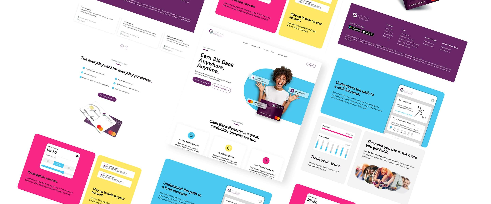
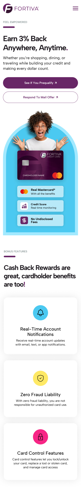
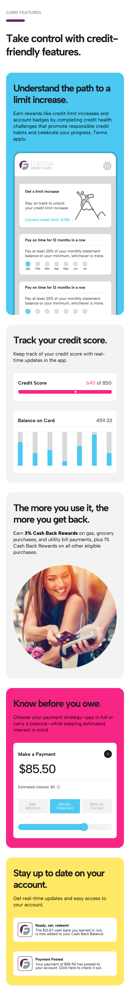
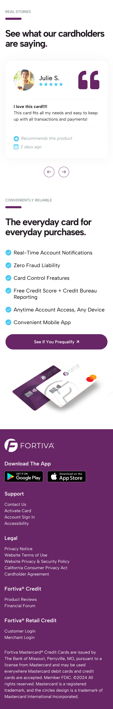
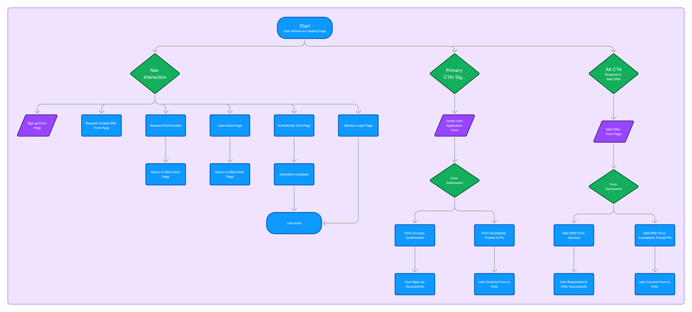

Fortiva Mastercard
Conversion-focused landing page redesign for a subprime credit card

Project Overview
Fortiva Mastercard is built for consumers rebuilding credit who need clarity, transparency, and confidence when applying. I led the UI design for a redesigned landing page focused on reducing uncertainty around eligibility and fees, improving information hierarchy, and guiding users into the application flow across mobile and desktop. The goal was to establish trust quickly while keeping compliance-driven content scannable and easy to understand.
01The Challenge
People landing on credit card offers often arrive skeptical, shaped by past experiences with unclear fees, vague approvals, and fine print that only appears later. For users rebuilding credit, confidence is fragile, and even small gaps in clarity can slow momentum or stop progress entirely.
In this experience, key details around eligibility, fees, and next steps existed but were not prioritized early, requiring users to work harder to self-qualify. The challenge was to surface trust-building information sooner, reduce decision friction, and guide users into the application flow with clarity and confidence.
Key Challenges
- Establish immediate trust for users with low credit confidence.
- Clearly communicate eligibility, fees, and card value without dense or misleading copy.
- Reduce cognitive load while presenting compliance-driven information.
- Guide users confidently into the application flow without pressure or confusion.
- Support fast decision-making across mobile and desktop experiences.
UX Goals
- Make eligibility and core benefits understandable within the first scroll.
- Help users quickly self-qualify without fear of rejection.
- Present pricing and fees transparently to reduce hesitation.
- Create a clear, predictable path into the application experience.
- Appeal visually and functionally to a younger, mobile-first audience while remaining accessible.
02Design Approach
The design approach focused on reducing friction, improving clarity, and helping users feel confident about taking the next step. The experience was intentionally structured to surface trust-building information early, support fast scanning, and make eligibility, value, and next steps easy to understand without overwhelming users.
Information Hierarchy & Layout
A clear visual hierarchy, generous spacing, and modular content blocks were used to support fast scanning and reduce cognitive load. Key information was prioritized above the fold to help users quickly understand the card’s value and application path.
 Redesigned hierarchy and layout
Redesigned hierarchy and layout
Messaging Strategy
Primary messaging leads with a clear, broadly relevant benefit so users can quickly understand what the card offers. Supporting copy stays short and plainspoken, addressing common concerns and building credibility without leaning on hype that could increase skepticism.
Trust & Transparency
Fees, eligibility details, and core card benefits were surfaced clearly and consistently throughout the experience to reduce uncertainty and set expectations early. By addressing common questions up front, the design helps users feel informed and confident, rather than surprised later in the application flow.
Color & Typography
Fortiva’s core purple was used intentionally as the primary call-to-action color, reinforcing brand recognition while clearly signaling moments of interaction. Supporting colors were kept restrained to maintain focus and visual hierarchy.
Typography was chosen for clarity and approachability, with generous sizing and spacing to support fast scanning and reduce friction, particularly for users navigating the experience on mobile or moving through the application flow.
Mobile-First Considerations
Given the mobile-first behavior of the 18–35 audience, the experience was designed to work comfortably within smaller screens without sacrificing clarity. Content was stacked intentionally, text was kept readable, and key actions were always within easy reach, allowing users to scan quickly and move forward without friction.



03The Process
Once the core goals were defined, the focus shifted to translating them into a clear, guided experience. The page was structured to establish value and trust early, then progressively deepen detail while keeping the application path visible at every stage.
1. Primary value at the top
The first step was clarifying what users needed to understand immediately. Key value points such as instant decisioning, low commitment, and fee transparency were surfaced at the top of the page to reduce anxiety around eligibility and set expectations before asking users to engage further.
2. Feature clarity
With trust established, the next step was making features easy to understand without overwhelming users. Benefits were grouped and presented in plain language, focusing on everyday value, visible progress, and account awareness. This helped users quickly connect features to real-world use rather than scanning dense product details.
3. Social proof
Social proof was introduced after core value and features to reinforce credibility. Testimonials help validate the experience through real customer voices and address common concerns around fees, service, and reliability at a point where users may still be deciding whether to apply.
4. Persistent, consistent CTAs
Throughout the page, calls to action were kept consistent in color, labeling, and placement. This predictability helps users always understand the next step without feeling pushed, allowing them to move forward when they feel ready rather than searching for where to act.
5. Defining Primary and Secondary Paths
To support different user intents without distracting from the primary goal, I mapped out the primary and secondary paths across the experience early in the process. This helped ensure navigation links, alternative CTAs, and form entry points were intentional and cohesive, while keeping the main application path clear, visible, and prioritized.
04Final Outcome
The landing page communicates value quickly, reduces confusion, and streamlines the path to application. Results reflect stronger engagement and intent.
- Average time on page increased by 15 percent, indicating deeper engagement with content.
- Bounce rate decreased by 12 percent, suggesting stronger message clarity and information scent.
- Conversion rate increased by 20 percent, driven by clearer copy, improved hierarchy, and consistent CTAs.
The design balances clarity and brand presence, performs well on mobile, and keeps the focus on the decision to apply.
Full Page View


{kind=link}
{kind=link}
{kind=link}